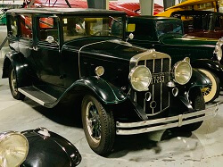

Museum Collection
Visitors at WAAAM quickly realize that our vehicles are not just a collection of old, unusable stuff. Once restored by our amazingly gifted volunteers, all of our antique cars and planes can and do run. More than that, they purrrrrr!
Automobile Collection

Our antique automobiles range in age from 1900's to the 1960's. But mostly, they're from the "Golden Age of Transportation," which took place around the 1920's, 30's, and 40's. Here are some examples ...
WAAAM's Locomobile is our 1923 Model 48 Sportif which was donated to WAAAM by Wes and Nancy Lematta of Columbia Helicopters. At a time when Ford was building thousands of cars every week Locomobile was building just four a week and each was a work of art.
Among our unusual cars are the Franklins from 1909 and 1929. The Franklin engines are air cooled and extremely well designed. The 1929 was even driven from Portland to WAAAM under its own power!
...and that's just scratching the surface!
Selected Automobile List by Year
Click a decade to travel through time: 1900's | 1920's | 1930's | 1940's | 1950's | 1960's | 1970's | 1980's
Don't see anything? Scroll up a bit and the automobile information should be there!
1900 Locomobile Steamcar Runabout
Year: 1900
Donor: Acquired with funds from Bill Bremmeyer
Engine: 2 Cyl., 5.5 HP
Transmission: None
Number of Doors: Open-doored
Curb Weight in Lbs: approx 650
One of the many things modern users of automobiles take for granted is that more often than not, our cars work without much effort on the part of the user. When automobiles first got on the scene the belief that a horseless carriage could function well was not held by many. All makers of automobiles contrived of various "tests" to build public confidence in their devices. The informational booklet that came with this Locomobile describes two of these tests.
"One of our 'Locomobiles' was run by an expert for 72 miles with 2.75 gallons of gasoline, at a cost of 17.5 cents. One tank of water sufficed for a run of 48 miles. The carriage was operated by an expert.
At a test made at Charles River Park, Boston, the 'Locomobile' climbed a 36% incline. Starting from Newton, traveling over all kinds of roads and carrying two persons, the 'Locomobile' climbed to the summit of Mt. Washington. Distance traveled to foot of mountain 205 miles. Average speed maintained 14.1 miles per hour. Accidents, none; neither on the trip, nor during the ascent nor descent. Gasoline consumed during the ascent, 1.75 gallons. Water consumed during ascent, 21 gallons."
1907 Everybody's Motor Buggy
Year: 1907
Donor: Burr & Jane Boutwell
Engine: 2 Cyl.
Transmission: Manual (2 speed)
Number of Doors: Open-doored
Curb Weight in Lbs: approx. 900
Technically an Everybody's Motor Car Mfg. Co. Runabout - this automobile had a very small production run and was built around 1907. It has a very neat air-cooled flat twin engine. This car has some great local history. It was the third car ever registered in The Dalles. The family who bought it used it as a company car for the Seufert Cannery. It was purchased from a catalog and delivered by rail from St. Louis. When the original owner went to pick it up and drive it home, he found it was shipped disassembled. He had to hire a mechanic to put it together! It took us just over a year for our volunteer crew to restore this automobile. Click here to check out the state the wheels were in.
Have you every heard of an Everybody's Car? Send us an email with any information you find!
1909 Franklin Model D
 Year: 1909
Year: 1909
Donor: Bruce & Barbara Weir
Engine: 4 Cyl.
Transmission: Manual (3 speed)
Number of Doors: open and 2
Curb Weight in Lbs: 2,000
WAAAM’s Franklin Model D is a good representation of early vehicle technology. It has no electric starter, no generator, and no battery. For lighting it relies kerosene burning lamps on the two sides and single rear light as well as two carbide fueled lights for the headlights. Franklin Model Ds had a four-cylinder, air-cooled inline engine. It also has a right hand drive.
1910 Aultman & Taylor Steam Traction Tractor
Year: 1910
Donor: Doris DeHart and Mark Grey
Engine: Steam/Boiler
Transmission: Traction
Number of Doors: open
Curb Weight in Lbs: approx 19500
We like to call this tractor a Hood River icon. For many decades it was a main feature in the Hood River 4th of July Parades. In the mid-80s it fell in to disrepair and people no longer got to see it. When the museum opened it fit right in with our antiques. It took us a while to find a team to restore it but once they started the tractor was back up and running in under 6 months! Originally we had thought this was a 1911 but as we restored the tractor all the serial and part numbers we found were from 1910 – our guess is that it was built in 1910 and by the time it reached the Hood River Valley, it was 1911 but still a “brand new” tractor. That’s more than 100 years of confusion cleared up!
1913 Ford Model T Touring Car
 Year: 1913
Year: 1913
Donor: Mike Gaulke
Engine: 4 Cyl.
Transmission: "T"
Number of Doors: 3
Curb Weight in Lbs: approx. 1,500
This car was the main mode of transportation for the early Hood River dentist Dr. S.C. Gaulke. It changed hands amongst the Gaulke family before it came to WAAAM but none of the family was quite sure on the year of the car. WAAAM's resident experts took a look and found yet another classic example of a common early automotive practice - to use up the old stock of parts before transitioning to the all new year of parts.
1913 REO "the 5th" Touring Car
Year: 1913
Donor: Funds from Roscoe Nelson in memory of Thomas Engel
Engine: 4 Cyl.
Transmission: Manual (3 speed), approx 30 HP
Number of Doors: 4
Curb Weight in Lbs: approx. 2,000
The REO Motor Car Company was founded by Ransome E. Olds in 1905. While company literature varies between “REO” and “Reo” for their capitalization, all agree that you pronounce the REO like the Rio Grande River or Rio de Janeiro in Brazil. This company made some of the more affordable luxury-style cars on the market at the time before branching out into other things like trucks due to competition from Ford and General Motors. While WAAAM is still working to substantiate this claim, all previous owners have handed down the story that WAAAM’s REO was driven in promotional tours for the Apollo space program.
1914 Detroit Electric Car Model 63
Year: 1914*
Donor: Jim & Mary Ann Powell
Engine: Electric (Batteries)
Transmission: Direct Drive
Number of Doors: 2
Curb Weight in Lbs: 3,636
Electric cars are over 100 years old! In 1891 the first successful electric automobile in the United States was built and soon after Anderson Electric Car Company (the makers of this Detroit Electric) started their electric car production in 1907. WAAAM’s Detroit Electric still has its original rechargeable lead acid batteries from the Edison Electric Company. Detroit Electrics were advertised to get 80 miles to the charge at speeds of 20-25 mph which was just right for the two most common types of electric car vehicle owners – doctors making house calls or ladies visiting friends and relatives. The WAAAM car is currently being restored back to operating condition on our display floors. *There is currently some debate on the age of the year of this vehicle. Stop on by to hear about our latest findings.
1914 Ford Model T Depot Hack
 Year: 1914
Year: 1914
Donor: Museum Funds with thanks to Michael & Sandra Fritz
Engine: 4 Cyl., approx 20 HP
Transmission: "T" + Rucksell
Number of Doors: 3
Approximate Curb Weight in Lbs: 1,200
The Ford Model T Depot Hack was created to carry passengers and their luggage to and from the railway depots. By 1914, the assembly process for the Model T had been so streamlined it took only 93 minutes to assemble a car. That year Ford produced more cars than all other automakers combined.
1915 Ford Model T Runabout
Year: 1915
Donor: Bruce & Barbara Weir
Engine: 4 Cyl., approx. 20 HP
Transmission: "T"
Number of Doors: 1
Curb Weight in Lbs: 1,200
1915 marked two big turning points for the Ford Model T – it was the end of the brass era for the cars, production shifted to all black cars, and the one millionth Ford Model T was produced. During the original restoration of this runabout, many layers of built up dirt and grime were stripped from the body revealing the original black paint and two different advertisements for early Pillsbury products. At the time automobiles were still novel enough that advertisements like this would easily stand out for anyone who saw the car which made the artwork a good investment for many companies looking to capitalize on new ideas of brand recognition, customer loyalty, and outdoor advertising.
1915 Overland Model 82 Touring Car

Donor: Jack & Joyce Woolf
Engine: 6 Cyl.
Transmission: Manual (3 speed)
Number of Doors: 4
Curb Weight in Lbs: 3,400
This automobile was painstakingly restored by master craftsman Jack Woolf. It took 7 years for what was left of a pile of rusty parts to bring this 7-passenger touring car back to life. It went on many driving tours over the years - including some up into Canada. It has been on display since January 2012 and was donated in 2016.
1916 Buick Touring Car
1916 Dodge Brothers Roadster
Year: 1916
Donor: Gary & Sally Jenkins
Engine: 4 Cyl.
Transmission: Manual (3 speed)
Number of Doors: 2
Curb Weight in Lbs: 1,800
When the John and Horace Dodge left the Ford Motor Company in 1913 they did not leave empty handed. After years of working with Ford and the development of his automobiles, in particular the wildly popular Model T, they knew all of the car’s faults and weaknesses and had plenty of ideas on how to fix them. Because the Dodge brothers still had a large amount of stock with the Ford Motor Company they were able to bankroll their own car company. The Dodge Brothers automobiles flourished as the brothers were able to utilize their full mechanical ability and design sense. The Dodge brothers continued to fund their Dodge Brothers automobiles on Ford stocks until Ford bought them and other investors out in 1919. WAAAM’s 1916 Roadster is a popular driver on Second Saturdays and during special event parades.
1917 Federal Flatbed Truck
Year: 1917
Donor: Gary & Petra Biddle
Engine: 4 Cyl.
Transmission: Manual (3 speed)
Number of Doors: Open
Curb Weight in Lbs: TBD
Federal Trucks were known for their no-nonsense, straightforward designs and were often called a trucker's truck. Unlike many early automobile manufacturers that contracted parts and pieces out to other companies, Federal did most of their machining and bodywork in house which resulted in a superior quality product. Federal trucks were one of the many types of trucks used during World War I. There is some anecdotal evidence that Federal trucks were often used to transport the new (very finicky) tanks to the front for deployment. WAAAM's favorite of the original advertisements proudly proclaims that Federal trucks helped keep flyers in the sky by being large and strong enough to haul airplane parts to pilots in need.
1917 King Eight Model EE
Year: 1917
Donor: Frank Alberti
Engine: V-8
Transmission: Manual (3 speed)
Number of Doors: 4
Curb Weight in Lbs: approx. 2,500
This King Car was originally purchased by the Kingsoving family. In the Fall of 1955, Frank Alberti came across it in the middle of their farm and after a day of negotiating and promising to “restore it right,” he bought the car. The maker of the car, Charles B. King, was the first man to design, build, and drive a car on the streets of Detroit. King rubbed elbows with many other notable names in automobile history including the Henry Ford, Ransom Olds, Frank Duryea, and many others. Early King Company advertisements proclaimed that King cars were the first cars in America with cantilever springs, en bloc motor, center control, and left side drive – these features became automobile industry standards over time. Alberti drove it in many parades in his local community. On August 15, 2015, Alberti threw his King Car a farewell parade before donating it to WAAAM.
1918 Chevrolet Model 490 Touring Car Elton
 Year: 1918
Year: 1918
Donor: Albert Elton
Engine: 4 Cyl.
Transmission: Manual (3 speed)
Number of Doors: 4
Curb Weight in Lbs: 2,000
This car was often a familiar sight in The Dalles as a fun sunny day driver for the Elton family. Albert Elton bought this car from another local family, the Forrest family, who had the car restored a number of years ago. The car was just as old as he was. It has been on display at WAAAM since 2011 and was donated in 2016 in memory of Albert's passing. There are just under 75,000 original miles on this vehicle.
1918 Chevorlet Model 490 Touring Car Alpenrose Dairy
 Year: 1918
Year: 1918
Donor: Alpenrose Dairy
Engine: 4 Cyl.
Transmission: Manual (3 speed), approx 26 HP
Number of Doors: 4
Curb Weight in Lbs: 2,000
The Chevrolet Model 490 was the company's response to the growing popularity of Ford's Model T. In 1918 Chevrolet merged with the General Motors group and was able to leverage itself into the third highest selling manufacturer in the U.S. that year.
1918 Ford Model T Touring Car
Year: 1918
Donor: Mary Sue Benton in Memory of Steve Benton
Engine: 4 Cyl.
Transmission: "T"
Number of Doors: 3
Curb Weight in Lbs: 1,500
Sometimes when someone collects cars they stick to a certain make or model. Other times folks have trouble deciding which "icon" is their favorite and wind up with an assortment of cars. Steve Benton liked muscle cars, but military jeeps were too classic to pass up and when he first got behind the wheel of a Model T he had to have some of them too. This car is one of the many Model Ts from his collection.
1919 Ford Model T Army Ambulance
 Year: 1919
Year: 1919
Donor: WAAAM Volunteers and Members
Engine: 4 Cyl.
Transmission: "T"
Number of Doors: Open-doored
Curb Weight in Lbs: approx. 1,650
For the longest time museum founder, Terry Brandt, wanted a World War I vehicle to go with WAAAM’s crown jewel, a 1917 Curtiss Jenny. For years he, along with other volunteers, collected the parts that would become this vehicle. WAAAM Volunteer Gene Wright built the chassis and made plans for the body. WAAAM Volunteer Andy Anderson put the collection of pieces together. No plans could be found so the restoration crew worked from pictures to ensure that they made an accurate vehicle. This process was very similar to what would have been done during World War I. Ford would supply contractors with the chassis and the rest of the vehicle would be done with the specific shop’s own vision of perfection. The project was finished and unveiled in May 2013 during our Second Saturday event. The restoration was funded entirely from our visitors’ generosity and the donations of parts from many individuals.
1919 Ford Model T "Quick Build Car"
Year: 1919 with a 1927 engine
Donation: WAAAM Members and Volunteers with special thanks to Michael Maurer
Engine: 4 Cyl., approx. 20 HP
Transmission: "T"
Number of Doors: 1
Curb Weight in Lbs: 1,200
This collection of parts and pieces is just complete enough to be considered a car in very loose terms. WAAAM uses it in our “Model T Quick Build Challenge.” Part of what made Ford vehicles so successful was the assembly line and mass production techniques that made Ford vehicles more affordable for the era. In this demonstration WAAAM Volunteers start with the car completely disassembled and work against the clock to reassemble it as quickly as possible. Crowds watch in wonder as all of the parts and pieces fit back into place and the engine is lowered in and reattached. The contest ends when this Model T starts up and drives again! During the 2013 Traffic Jam the fastest time ever for completing the challenge was recorded – an amazing 2 minutes and 59 seconds!
1919 Republic Model 19 Flatbed Truck
Year: 1919
Donor: Larry Hull
Engine: 4 Cyl. Buda, approx 52 HP
Transmission: Manual (4 speed)
Number of Doors: Open-doored
Curb Weight in Lbs: approx 6000
Founded in Alma, Michigan, the Republic Motor Truck Company was one of the more popular truck companies of the 19-teens and 1920s. By 1918, advertisers were claiming Republic was the largest truck manufacture in the world with a wide array of body styles to fit any industry need.
1919 Samson 1.25 Ton Flatbed Truck
Year: 1919
Donor: Acquired with funds from Ray Splinter, Terry Brandt, & Phil Jensen
Engine: 4 Cyl., 26 HP
Transmission: Manual (3 speed)
Number of Doors: Open
Curb Weight in Lbs: approx. 4,000
According to the Pacific Northwest Truck Museum, this vehicle is only one of four left of its kind. As usual for trucks of this era, the body style was added later to fit the customer's need while the chassis alone was purchased for $950. This truck was originally restored by Warren Wedekind.
1919 Scripps Booth Model 39-B Touring
Donor: D & L Foundry
Engine: 6 Cyl.
Transmission: Manual (3 speed)
Number of Doors: 4
Curb Weight in Lbs: 2,500
The Scripps Booth company was one of the very early acquisitions into the General Motors family. Early literature for this type of car touted all the many different factory available options a user could add to personalize their ride. WAAAM's favorite of these options reminds us all about how rudimentary the road system was way back then - this option was called a "weed-wacker" but today we'd call it a bumper.
191
1921 Ford Model T Pickup Truck
Year: 1921
Donor: Gene & Bonnie Wright
Engine: 4 Cyl.
Transmission: "T"
Number of Doors: 2
Curb Weight in Lbs: approx. 1,400
This Model T helps tell the story of every day people adjusting cars to work for them. Ford did not build a "factory pickup" until 1925 but that didn't stop folks from converting roadsters and touring cars into trucks and other haulers to get the job done. "Fifi" the Pickup Truck is currently masquerading as an early aviation gas truck with a large tank in the truck bed. Sometimes you can spot her as a water wagon or mail carrier depending on the display she is found in.
1922 Velie Model 58 5-Passenger Touring Car
Year: 1922
Donor: Acquired with Thanks to Miles Wilson, Arthur & Patrica Henderson, and Dave Elkins
Engine: 6 Cyl.
Transmission: Manual (3 speed)
Number of Doors: 4
Curb Weight in Lbs: approx. 2,100
WAAAM's Velie is a Model 58 5-Passenger Touring Car. The Velie (pronounced Vee-Lee) Carriage Company started out making buggies in 1902. In 1908 they transitioned to automobiles and by 1927 they had diversified again and were manufacturing airplanes. (WAAAM also has a 1928 Velie Monocoupe 70 airplane on display.) According to the Official Velie Registry, there are only approximately 220 of this company’s cars still around today. Back in the early 2000s WAAAM’s Velie was almost done being restored by a former owner. Unfortunately, there was a big storm and a tree fell on the barn it was housed in. Oddly enough some of the volunteers we have restoring this car also worked on it during its previous, ultimately-doomed, restoration attempt. As of August 2014 we can run the car but with no seats, floor boards, or brakes. Week by week this car gets closer and closer to becoming a finished restoration project.
1923 Ford Model T 3-Door Sedan
 Year: 1923
Year: 1923
Donor: Terry Brandt
Engine: 4 Cyl., approx 20 HP
Transmission: "T"
Number of Doors: 3
Curb Weight in Lbs: 1,350
This is one of the Model Ts that is use for the Model T Driving School. Every spring through fall WAAAM has a few classes to take people back through time and to teach people how to drive this iconic vehicle. When WAAAM taught the very first Model T Driving School class the seats were little more than exposed springs covered with burlap and carpeting to make it a bit more comfortable. Since then the upholstery has been replaced with more comfortable cushions. Thanks to the funds provided from the Model T Driving School WAAAM is able to keep this and other vehicles in working order so that generations to come can not only see these iconic machines in action but actually have the opportunity to drive a piece of living history.
1923 Ford Model T Coupe
Year: 1923
Donor: Funds from Terry Brandt
Engine: 4 Cyl.
Transmission: "T"
Number of Doors: 2
Curb Weight in Lbs: approx. 1,650
First cars always carry fond memories for most folks. WAAAM Museum Founder Terry Brandt's first car was a Ford Model T quite similar to this one. Brandt got it from a friend of his dad's when he was a young teenager because it could hardly drive and didn't have a steering wheel. The car provided hours of entertainment. Although Brandt's original vehicle was left behind to the pages of history, when the museum got wind of this particular all-original 1923 Model T with reverse opening doors, Brandt jumped at the chance to acquire it for the good of the collection. Oddly enough, one of our volunteers who passed away a number of years ago used to own this car. He's the reason it was kept in such great condition for all these years. After a quick tune up it was back on the road once again.
1923 Locomobile Model 48 Sportif
 Year: 1923
Year: 1923
Donor: Wes & Nancy Lematta
Engine: 6 Cyl. with dual spark plugs, approx 120 HP
Transmission: Manual (4 speed)
Number of Doors: 4
Curb Weight in Lbs: approx. 6,000
This top-of-the-line model was produced from 1919 until the Locomobile Company folded in 1929. Although it was not innovative as far as luxury cars go, its workmanship was among the best in the world with a price to match.
1925 Autocar Truck
Year: 1925
Donor: Larry Hull
Engine: 4 Cyl.
Transmission: Manual
Number of Doors: Open-doored
Curb Weight in Lbs: several tons
In 1897 the Autocar Company produced its first vehicle and by 1899 it was building the first motor truck commercially available in the U.S. These early delivery vehicles had an "engine-under-the-seat" design that maximized the area for freight and were the precursor to the modern designs still used today by many truck companies. By 1911, Autocar specialized in trucks with lots of custom work and purpose built vehicles for different specialized trades. "Big and Tough" became the Autocar creed as their trucks became the must-have tool for the roughest industries, including mining, oil drilling, and logging. This specialization lead to industry dominance as early as the 1920s. Some other notable firsts we can thank the Autocar Company for include America's first shaft driven vehicle, the first double reduction rear axle, and the first viable circulating oil system.
1925 Ford Model T Pickup Truck
Year: 1925
Donor: Terry Brandt
Engine: 4 Cyl., approx 20 HP
Transmission: "T"
Number of Doors: 1
Curb Weight in Lbs: 1200
Almost as soon as automobiles began increasing in popularity with mass-market consumers aftermarket add-ons became the new normal. People wanted more lights, more seats, bigger trunk racks and more. The most popular of these aftermarket adjustments was turning car chassis into truck chassis to haul goods around. While today we are used to trucks coming purpose-built and ready to go, nearly all early trucks were the product of self-styling needs or custom jobs until Ford's factory-built-as-an-actual-truck truck was born in 1925.
This Ford is one of the few we use for our Model T Driving School Classes.
1925 Ford Model TT Truck
Year: 1925
Donor: Bob & Allyson Kavner
Engine: 4 Cyl.
Transmission: "T"
Number of Doors: 2
Curb Weight in Lbs: approx. 2,500
People often wonder what goes through a donor's mind when they decided to choose WAAAM to be the new steward of their things. Finding folks that can "think like the mechanics of the 1920s" can often be a challenge when you want to keep things up and going. Click here for a video from this Ford TT Truck donor for his take on the thought process.
1926 Ford Model T Coupe on skis and tracks
Year: 1926
Donor: D & L Foundry
Engine: 4 Cyl.
Transmission: "T"
Number of Doors: 2
Curb Weight in Lbs: approx. 2400
This Ford Model T has the most unusual aftermarket option in the whole WAAAM collection. The entire undercarriage was redesigned to tackle winter weather driving with skis on the front and tandem axles with tracks on the back. Back in 2016 when we had one very extreme winter we would drive this car around to play in the snow.
1926 International Model SPD 3/4 Ton Truck
Year: 1926
Donor: Larry Hull & Judy Jackson
Engine: 4 Cyl.
Transmission: Manual (3 speed)
Number of Doors: Open
Curb Weight in Lbs: 2150
GVW in Lbs: 5150
This 3/4 ton special delivery truck has been on display at WAAAM since 2011. When it was donated the museum did some digging and discovered that the body was built by the Willard company in Portland, Oregon. After more digging we found out about the real-life bread company the side panel artwork was from too. The Stein Bakery opened in Portland, Oregon back September 17, 1888, with 17 year old German immigrant Carl C. Stein and a business partner at the helm. By the end of the year Stein took full control of the business and there was no looking back. (The bakery was originally called the Vienna Bakery and was changed to Stein's Bakery in 1922). Dubbed "the pioneer baker of Portland" by the Oregonian, Stein was successful enough that he progressively expanded his operation over the decades. According to "History of the Columbia River Valley From The Dalles to the Sea, Vol. III" by 1927 Stein's Bakery had 7 delivery wagons. Stein himself retired from the business in 1941. The original Stein's Bakery building was demolished to make way for the Stadium Freeway and Stein's Bakery merged with an Oroweat branch in Beaverton by 1965. As the print on WAAAM's International Truck suggests - Stein's pumpkernickle and rye breads were the most popular of their baked goods.
1927 Chevrolet "Outlaw" Dirt Track Racer
Year: 1927
Donor: Gene & Bonnie Wright
Engine: 4 Cyl.
Transmission: Manual (3 speed)
Number of Doors: open
Curb Weight in Lbs: approx. 1,200
This automobile was reconstructed by WAAAM volunteer Gene Wright from 2004 to 2007 based on photos of the original dirt track racers of the era. Many of these photos can be found in books like "Outlaw Sprint Car Racer" by John Gerber and other publications. These cars raced at country fairs, early raceways, and beach tracks around the country.
1927 Ford Model T Coupe
 Year: 1927
Year: 1927
Donor: Model T Driving School Students
Engine: 4 Cyl., approx. 20 HP
Transmission: "T"
Number of Doors: 2
Curb Weight in Lbs: 1,800
When WAAAM first started the Model T Driving School back in 2011 no one ever anticipated the class taking off as well as it did. After the 2013 classes, the museum knew another car was needed. The volunteers went out and hunted for a good Model T driver for students to learn on. When everything was said and done this 1927 Coupe came away as the winner. Using some of the funds generated to keep the class going and the cars operational for the class – a bit of a tall order considering the wear student drivers can put on them – the museum purchased this Model T. Since we've had the car we've swapped out the leopard print seat coverings and a few other things to bring it back to a more original condition as students continue to use it to experience living history at its finest.
1927 Ford Model T Speedster
Year: 1927
Donor: Gene & Bonnie Wright
Engine: 4 Cyl.
Transmission: "T"
Number of Doors: Open
Curb Weight in Lbs: approx. 1,200
Even in the earliest days of the automobile, people tried their hand at racing - first against horses, then against the time clock, and eventually against other automobiles. By the 1920s, car racing culture was well established as racers worked to find ways to beef their engines up or strip "unnecessary" parts off their car in an effort to go faster than ever before. This 1927 Model T Speedster is an homage to those early drivers.
1927 Moon Brougham
Year: 1927
Donor: Ron & Linda Moon
Engine: 6 Cyl.
Transmission: Manual (3 speed), approx. 50 HP
Number of Doors: 2
Curb Weight in Lbs: 2,700
The Moon company began making cars in 1905. Their peak years were in the later 1920s with the company going bust as so many did in the 1930s. In 1927 Moon produced 4,180 automobiles with around 360-400 of those being in the Brougham style. While the early history of this particular car is lost to the ages, it was re-imported to the USA from Canada as a project back in 2002. According to the Moon Car Club this is the only 1927 Moon Brougham currently known in existence.
1927 Willys Knight Model 70A Green 4-Door Sedan
Year: 1927
Donor: Michael Willaston
Engine: 6 Cyl.
Transmission: Manual (3 speed), approx 65 HP
Number of Doors: 4
Curb Weight in Lbs: approx 3100
The Knight engine in this Willys Model 77A is a sleeve valve style engine. This type of engine was prized for its very quiet running sound and high mileage longevity before servicing. In 1927 Willys broke several performance records and the 70A model was their lower end offering for folks who wanted to get in on the action.
1927 Willys Knight Model 70A Blue 4-Door Sedan
Year: 1927
Donor: Craig Mendenhall
Engine: 6 Cyl.
Transmission: Manual (3 speed), approx. 65 HP
Number of Doors: 4
Curb Weight in Lbs: approx. 3,100
The Knight engine in this Willys Model 77A is a sleeve valve style engine. This type of engine was prized for its very quiet running sound and high mileage longevity before servicing. In 1927 Willys broke several performance records and the 70A model was their lower end offering for folks who wanted to get in on the action. This particular car has an all original interior.
1928 Buick 4-Door Sedan
Year: 1928
Donor: Michael Willaston
Engine: 6 Cyl.
Transmission: Manual (3 speed), approx 63 HP
Number of Doors: 4
Curb Weight in Lbs: approx 3300
1928 brought significant retooling to the Buick line. New lovejoy hydraulic brakes came standard making for a smoother, easier ride. Double drop frames brought the body closer to the ground for a heightened luxury feel. Chrome accents were also a first for Buick on this year's models. Even with all these changes Buick production still lagged in the #6 spot well behind other manufacture's sales.
1928 Buick 2-Door Country Club Coupe
Year: 1928
Donor: Michael Willaston
Engine: 6 Cyl.
Transmission: Manual (3 speed), approx 63 HP
Number of Doors: 2
Curb Weight in Lbs: approx 2990
1928 brought significant retooling to the Buick line. New lovejoy hydraulic brakes came standard making for a smoother, easier ride. Double drop frames brought the body closer to the ground for a heightened luxury feel. Chrome accents were also a first for Buick on this year's models. Even with all these changes Buick production still lagged in the #6 spot well behind other manufacture's sales.
1928 Ford Model A Roadster Pickup
 Year: 1928
Year: 1928
Donor: Denny Evans
Engine: 4 Cyl.
Transmission: Manual (3 speed)
Number of Doors: Open
Curb Weight in Lbs: 2,215
The original owner of this car was from Spokane, Washington. He bought it new as a coupe but wrecked it nearly beyond repair just before he fought in World War II. He sold the pieces to a nearby farmer who was crafty enough to graft a Model T pickup bed on the back to breath new life into the car after several hefty repairs and alterations including adding a convertible top. By the 1970s farm life for this car was over. It was purchased by another Spokane-ite who wanted to turn it into a hot rod. He got as far as putting in red plastic seat covers and a matching steering wheel before a new addition to his family and he sold his project in 1980. By this time the car was more rusty than the original red color and didn't function well. It underwent a full restoration to become a yellow depot hack with period correct seat covers and other cosmetic changes. The car did a lot of touring during this era going as far afield as Clagary, Canada and Reno, Nevada. It changed hands again in 2014. This time, with a nod to the car's diverse lifestyle, it was outfitted with all manner of antique accoutrements and transformed into a "Grapes of Wrath" car. The vehicle itself still runs well but the paint was purposefully marred to regain a more vintage patina.
1928 Ford Model A Speedster
 Year: 1928
Year: 1928
Donor: John & Janice Fiedler
Engine: 4 Cyl.
Transmission: Manual (3 speed), approx 40 HP
Number of Doors: Open
Curb Weight in Lbs: approx. 1,900
Sometimes you find an old car that still has a bit of life but is really rough shape. Historically, these cars were often turned into stripped down "speedsters" or were "rodded out" with a bit custom fun. This vehicle was painstakingly restored with a hard-to-manufacture boat-tail-style rear end. As of 2020, it meets the current road rally racing standards for the type of vehicle.
1928 Studebaker Dictator Coupe
Year: 1928
Donor: Terry Brandt
Engine: 4 Cyl., 75 HP
Transmission: Manual (3 speed)
Number of Doors: 2
Curb Weight in Lbs: 2336
It may seem odd to us today to name a car "Dictator" but when this line of autos was first unveiled in the late 20s the name was intended to reflect that Studebaker felt that even their low end model could "dictate the standard" for all other car makers as an affordable, reliable, and visually appealing car. The Dictator name cause problems with sales overseas but did fairly well as a line in the US until the growing controversial political climate of the 1930s in Europe began to draw too much scorn on the name and forced Studebaker's hand in an abrupt update.
WAAAM's Studebaker Dictator is a project but it is currently on the display floor being restored for all to see and enjoy.
1929 Ford Model A 3-Window Town Sedan
 Year: 1929
Year: 1929
Donor: Wayne & Kathy Stone
Engine: 4 Cyl.
Transmission: Manual (3 speed)
Number of Doors: 4
Curb Weight in Lbs: 2,462
This 3-Window Town Sedan originally came from Montana by way of a Washington collector who was looking for a new project car. It needed substantial restoration work and was donated to the museum with everything finished up except for the paint. This was the first car to inaugurate WAAAM's newly built car shop paint booth. For those with a particular eye for detail - the body is a Murray body (not a Briggs) which was most characterized by the more softer, arched window styling compared to the more standard square windows.
1929 Ford Model A Roadster Pickup
Year: 1929
Donor: Melissa Burgess
Engine: 4 Cyl.
Transmission: Manual (3 speed)
Number of Doors: 2
Curb Weight in Lbs: 2,215
Sometimes you need to test a car out before you decide to take the plunge and get one for yourself. John Burgess spent many years with his friends in the Gorge Model A Ford Club driving other folks' cars to find just the right style and year he wanted. This 1929 fit the bill. He spent a lot of time tinkering with it and would often drive it around The Dalles on nice days. When he passed, his kids wanted to keep it in the Columbia River Gorge area so they chose to donate it to WAAAM.
1929 Franklin Model 135 Sedan
Year: 1929
Donor: Jack Woolf
Engine: 6 Cyl.
Transmission: Manual (3 speed)
Number of Doors: 4
Curb Weight in Lbs: approx. 3,900
In the automotive world some cars are found pristine in barns, other cars are found rusty and broken down in thickets of plants, other cars you can only find pieces of - bit by bit at a time. This 1929 Franklin is the latter case. It took many years of tracking down pieces at swap meets and other sales to find what was missing off of a very cannibalized frame way back in the 1950s or so. After decades of determination it payed off with one very beautiful air-cooled automobile. (The radiator shell is fake.) This Franklin has been on many shows and tours all around the Pacific Northwest since the 1980s.
1929 Studebaker Commander 8
Year: 1929
Donor: John & Evelyn Lorence
Engine: 8 Cyl.
Transmission: Manual (3 speed)
Number of Doors: 2
Curb Weight in Lbs: 3,195
For as long as there was a Studebaker automobile there were almost always Studebaker Commanders in their offerings. In 1929 the Commander 8 was a mid-range model. The family that donated this car enjoyed taking it out on road trips and tours. They would often stash valuables in the only part of the car you could lock - in the rumble seat compartment.
192
1930 DeSoto Model CF Deluxe 4-door Sedan
Year: 1930
Donation: Michael & Sandra Fritz
Engine: 8 Cyl., approx 72 HP
Transmission: Manual (3 speed)
Number of Doors: 4
Curb Weight in Lbs: 2,720
The DeSoto Deluxe was an automobile built between 1930 through the 1952 model year. Despite the name, the Deluxe was DeSoto's entry-level car and was offered primarily as two-door and four-door sedans. Early advertising claimed that the body was "rust proofed."
1930 Ford Model A "Huckster"
Year: 1930
Donor: North Cascades Vintage Aircraft Museum
Engine: 4 Cyl.
Transmission: Manual (3 speed)
Number of Doors: 2
Curb Weight in Lbs: approx. 2,215
Hucksters were kit conversions that you could put on the back of many different early truck models. The side flap panels roll up making it easy for vendors to display their goods without having to load and unload their stuff or pay extra to move it around. Think of it as the 1920s or 30s version of a food cart or ice cream truck.
1930 Ford Model A Standard Coupe
 Year: 1930
Year: 1930
Donor: Sheryl Carey in memory of Will Carey
Engine: 4 Cyl.
Transmission: Manual (3 speed)
Number of Doors: 2
Curb Weight in Lbs: 2,248
Will Carey was a Chevy guy. He owned Chevys. Restored Chevys. Lived and breathed Chevys of all eras. When one of his long time friends would joke that Carey should have his very nice vintage Ford when he passed away, Carey never found it funny. When the friend passed it turned out he did indeed will the Ford to a quintessential Chevy man. It has been on display at the museum nearly the moment Carey got it.
1930 Hudson 4-door Sedan
Year: 1930
Donor: Ray & Deborah Splinter
Engine: 8 Cyl.
Transmission: Manual (3 speed)
Number of Doors: 4
Curb Weight in Lbs: 3426
This Hudson Super 8 was originally from California before an Oregon car collector fell in love with it an brought it up to Oregon. It changed hands again in 1976 to longtime WAAAM volunteer Ray Splinter who was pleased to find that the car was original save for a repaint job, overhauled engine, and minor fender straightening (possibly fixing them up from a racing fender-bender). This car has been on display at the museum since 2009 and was donated in 2017.
1931 Chevrolet 4-door Phaeton
Year: 1931
Donor: Bill and Mina Clough
Engine: 6 Cyl.
Transmission: Manual (3 speed)
Number of Doors: 4
Curb Weight in Lbs: approx. 2,900
Despite the continuing ramifications of the Great Depression, Chevy's recently redesigned engine and corresponding vehicles managed to maintain the company's sales of all their vehicles. This particular model - the 4 door version of the Phaeton - was the rarest model in the 1931 line with only 852 produced.
1931 Chevorlet Model AE 2-door Sedan
Year: 1931
Donor: Phil & Judy Jensen
Engine: 6 Cyl.
Transmission: Manual (3 speed)
Number of Doors: 2
Curb Weight in Lbs: approx 2400
As Chevy's 8th millionth rolled off the assembly line and despite still reeling from the effects of the Great Depression, Chevy slashed their prices on all body styles for the 1931 season. As a sales strategy, this proved wildly popular with consumers and enabled Chevy to overtake Ford as the number one car manufacturer and roll out their 8th millionth automobile.
WAAAM's 1931 Chevy Model AE is the 2-Door variant. The much more expensive 4-Door version was almost double as popular despite the price.
1931 Chevorlet Model AE 4-door Sedan
 Year: 1931
Year: 1931
Donor: Michael Willaston
Engine: 6 Cyl.
Transmission: Manual (3 speed), approx 50 HP
Number of Doors: 4
Curb Weight in Lbs: approx 2700
As Chevy's 8th millionth rolled off the assembly line and despite still reeling from the effects of the Great Depression, Chevy slashed their prices on all body styles for the 1931 season. As a sales strategy, this proved wildly popular with consumers and enabled Chevy to overtake Ford as the number one car manufacturer and roll out their 8th millionth automobile.
This 4-Door version of the 1931 Chevy Model AE joined its 2-Door variant at the museum in 2019. Of the two, the 4-Door was much more expensive but also almost double as popular despite the price.
1931 Ford Model A Deluxe 2-door Sedan
 Year: 1931
Year: 1931
Donor: Terry Brandt
Engine: 4 Cyl.
Transmission: Manual (3 speed)
Number of Doors: 2
Curb Weight in Lbs: 2,336
1931 was the last year Model A Fords were produced. They came with one of the most extensive catalogs of different body styles to fit any need. Many ads for the Ford Model A targeted women drivers stressing their safety, reliability, and newfound stylish qualities. WAAAM often drives this '31 Ford during our Second Saturday events. If you visit on one of these days see if you can hop a ride in "green wheels."
1931 Ford Model A Roadster
Year: 1931
Donor: Dave Elkins
Engine: 4 Cyl.
Transmission: Manual (3 speed)
Number of Doors: 2
Curb Weight in Lbs: 2,150
1931 was the last year of the Model A Fords. This car is one of our most popular Second Saturday favorites for giving rides and is a great introduction to the novels of riding in a rumble seat. It was also one of the first cars that was restored by volunteers at the museum.
1932 Plymouth PB RS Coupe
Year: 1932
Donor: Ray & Deborah Splinter
Engine: 4 Cyl.
Transmission: Manual (3 speed)
Number of Doors: 2
Curb Weight in Lbs: approx. 2,800
This Plymouth was bought new by farming family in Battle Ground, WA as a weekend driver to get tow town for shopping and church. They passed it along to a collector who loved not only the car but the pristine condition it was in. When the collector passed his stepson wanted to turn the car into a street rod but never found the time to get around to it. Because it was going to be heavily worked on for the conversion, the car sat outside for over a decade. In 1970 Ray Splinter spent an hour cutting it out of the blackberry bushes that had consumed the car. The bones of the body held up fairly well but you could easily poke your finger through any of the interior upholstery. It took 8 years of on-again-off-again work to get the Plymouth restored. Splinter did most of the mechanical work while long time friend and car restorer Jack Woolf did the body work and pain. This car came to WAAAM on loan in 2009 and was donated in 2017.
1932 Studebaker Model 55 Regis Sport Coupe
Year: 1932
Donor: Funds from Don Mayo with special thanks to Jack Woolf in memory of Joyce Woolf
Engine: 6 Cyl.
Transmission: Manual (3 speed)
Number of Doors: 2
Curb Weight in Lbs: approx. 2,100
Hobbies help add variety to life. Some hobbies take up little space while other hobbies (like car restoration) take up a lot of space. To appease his wife Joyce, master restoration expert Jack Woolf asked her what car she would like him to work on as a gift to her. She picked her all time favorite car - a 1932 Studebaker Model 55 Regis Sport Coupe similar to the ones she saw about town as she was growing up. It took some searching but Woolf found most of one, kept hunting for parts, and eventually was able to restore it as a present for her. Jack and Joyce were married for 78 years before she passed and she used the car as her errand runner about town.
1932 Willys Overland Model 90
Year: 1932
Donor: Dale Price
Engine: 6 Cyl.
Transmission: Manual (3 speed), approx 65 HP
Number of Doors: 2
Curb Weight in Lbs: approx 31200
While this car may look like a standard 1932 Willys Overland Model 90, a closer look at the will reveal some very odd holes in the body of the car. That's because this vehicle was used some time during the almost 20 year history of Hopalong Cassidy movies and TV shows as a camera car to keep up with horse chase scenes. Some have even claimed that the car itself can be seen in some of these productions although we have yet to watch them all to find out ourselves.
1933 International Pickup Truck
Year: 1933
Donor: Jim Rohlfing
Engine: 4 Cyl.
Transmission: Manual (3 speed)
Number of Doors: 2
Curb Weight in Lbs: approx. 1,950
This era of International trucks was built by the Willys company with modifications requested by International. Upon close up inspection of the car you'll notice is essentially a Willys coupe with a pickup bed and many interchangeable parts with the rest of the Willys line. These autos are quite rare and helped save the Willys company during the Great Depression.
This vehicle was originally part of renowned restorer Dale Price's "Willys-Overland" collection by way of his son.
The engine had not operated for more than 15 years when WAAAM got it but it did not take that much effort to get it running again.
1934 Ford Pickup Truck
Year: 1934
Donor: Mike & Linda Strong
Engine: V-8
Transmission: Manual (4 speed)
Number of Doors: 2
Curb Weight in Lbs: approx. 1,800
This hard working car was found in Missoula, Montana. It was a little rough around the edges but this didn't stop Mike Strong from driving it home to the Pacific Northwest. Overtime little tweaks and other fixes kept it up and running. And after a one-of-a-kind blue paint job with yellow accents this vehicle became instantly recognizable running errands between Strong's home and his airplane hangar. At the museum this is one of our get-up-and-go cars so if it is not on display floor you'll probably see it working around the property.
1935 Chrysler Airstream
Year: 1935
Donor: Kenneth Bates
Engine: 6 Cyl.
Transmission: Manual (3 speed)
Number of Doors: 4
Curb Weight in Lbs: 3,000
When donor Kenneth Bates was almost but not quite a teenager he would often enjoy looking at an old Dodge truck found on the filbert farm his family was leasing out. When the farm sold in 1960 he did his best to convince the owner to give him the truck. She said 'no' but offered up a Chrysler that had been sitting in the barn for years. He fell in love with "the machine" as the family called it and spent all summer getting it cleaned up. After only minor tinkering with the help of his father, Bates got the car fired up and would drive it around the property with all the windows open because over the years the safety glass had fogged up. In honor of getting his driver's permit, Bates and his family overhauled the engine to get it road worthy. He drove it to high school and to various jobs around town. Everyone loved "the machine." Over the years he continued working on the car and from the experience gained on it, Bates was promoted from Beaverton School District bus driver to a mechanic and eventually shop foreman.
1936 Chevrolet 2-door Sedan
 Year: 1936
Year: 1936
Donor: Phil & Judy Jensen
Engine: 6 Cyl.
Transmission: Manual (3 speed)
Number of Doors: 2
Curb Weight in Lbs: 2,940
Much of the changes seen in the 1936 year for Chevy came under the hood. The company pushed their exclusive for the price range hydraulic breaks that provided a smooth even stop no matter how you treated the car. This particular style of vehicle most popular model in the line this year.
1936 Cord 810 Westchester Sedan
Year: 1936
Donor: Walt & June Ford Family
Engine: V-8
Transmission: Semi-Automatic (4 speed)
Number of Doors: 4
Curb Weight in Lbs: approx. 4,000
This car was purchased by a physician in Bend, Oregon in 1964. He restored, maintained and tinkered with it for many years. One of of his more clever restoration work can be found in a piece of chrome trim that forms a small arc over the transmission cover hump. It was missing from the car and in a time before the internet there wasn't a replacement piece readily available. If you look closely, you can see that the existing piece is made of stainless steel rather than chrome like the rest of the trim. During an operation to remove a rod used to stabilize a broken leg, the physician realized that the cross-sectional shape of part of the rod was very similar to the missing trim piece on the car he was restoring. In the spirit of recycling, re-purposing, and reusing discarded materials, this new found material was incorporated into the car's missing trim.
1936 Ford 1.5 Ton Flatbed Truck
 Year: 1936
Year: 1936
Donor: Larry Howard
Engine: V-8
Transmission: Manual (4 speed)
Number of Doors: 2
Curb Weight in Lbs: approx 4,850
Despite still reeling from the effects of the Great Depression - Ford's truck line, with their wide variety of cabs and styles, continued to do well and even produced their 3rd millionth truck in 1936. The all-steel cab and dual rear wheels were standard in this model's year. This kind of truck would set a buyer back about $700 (about 1/5 the cost of an average house in 1936).
1936 Plymouth 2-door Coupe
Year: 1936
Donor: Terry Brandt
Engine: 6 Cyl.
Transmission: Manual (3 speed)
Number of Doors: 2
Curb Weight in Lbs: 2,705
Bee Brandt, mother of WAAAM’s founder Terry, loved her 1936 Plymouth. Unfortunately after only a few memories together, her car was stolen and later found abandoned in a lake. While she moved on to other automobiles she never forgot her love for that year and style of car. Terry looked everywhere for something that was a close fit to the car his mom had lost and after much searching he found this 1936 Plymouth and gave it to her. She loved it.
1936 Plymouth Custom Coupe
Year: 1936
Donor: Phil & Judy Jensen
Engine: V-8
Transmission: Automatic
Number of Doors: 2
Curb Weight in Lbs: 2705
This year marked the start of the "Plymouth Builds Great Cars" ads that remained with the company for years. Most of the customization in this car has been modifications to the engine, lowering the body, and a slick new interior. The paint color is also a few shades off from the factory blue.
1939 Ford 9N Tractor
 Year: 1939
Year: 1939
Donor: Cliff Mansfield
Engine: 4 Cyl.
Transmission: Manual (3 speed)
Number of Doors: open
Curb Weight in Lbs: approx 2410
The Ford 9N tractor brought about a revolution for Ford tractors. Previous models were well liked but many had a tendency to accidentally flip backward if the implements being pulled on the back encountered an immovable obstruction. Ford partnered with Henry Ferguson outfitting his tractors with a special 3-point hydraulic hitch system which made the tractors not only much safer but changing implements a total breeze. It was light but rugged and cost significantly less than other tractors on the market making it a perfect vehicle for the many small farms that still dotted America.
1939 John Deere Tractor Model B
Year: 1939
Donor: the Burback family and the Bean family
Engine: 2 Cyl.
Transmission: Manual (4 speed)
Number of Doors: open
Curb Weight in Lbs: approx 4500
For many years in the hard working tractor world, looking good while getting the job done was sidelined for functionality. John Deere bucked the trend with a complete restyling of both their "A" and "B" lines in 1939. Not only was this tractor a powerful workhorse but the streamlined styling and other body tweaks gave the vehicle a more modern feel.
1939 Plymouth Coupe
Year: 1939
Donor: Chuck & Marge Babcock
Engine: 6 Cyl.
Transmission: Manual (3 speed)
Number of Doors: 2
Curb Weight in Lbs: 2879
1939 was a great year for the Plymouth marquee. They cornered the market on low priced cars while still providing comparable style and features to other higher end automotive brands. This particular vehicle was used as a salesman car with an extended enclosed trunk area behind the seats used for secure storage.
1940 Ford Deluxe 4-Door Sedan
Year: 1940
Donor: Phil & Judy Jensen
Engine: V-8
Transmission: Manual (3 speed)
Number of Doors: 4
Curb Weight in Lbs: 2,970
In 1940 Ford enticed new buyers with 22 new improvements to the year's automobiles. For the Deluxe Sedan this meant general front end restyling with long hoods and long lines. Additional interior features were also heavily touted for the convenience of every user including updated fingertip gear shifting "so easy women will have no trouble at all" and dual ashtrays on both sides of the two-tone dash.
1941 Buick Super 8 Sedan
Year: 1941
Donor: Gary and Linda Kessimakis
Engine: 8 Cyl.
Transmission: Manual (3 speed)
Number of Doors: 4
Curb Weight in Lbs: 4,200
With its Fireball Straight 8 engine, this Buick really gets going despite its fairly demure body styling. Advertising was quick to point out, "It's got a sport plane's manner when you want to get places pronto or have a little fun."
1941 Chevrolet Master Deluxe Business Coupe
Year: 1941
Donor: Phil & Judy Jensen
Engine: 6 Cyl.
Transmission: Manual (3 speed)
Number of Doors: 2
Curb Weight in Lbs: 3,020
Chevy's business coupe sought to blend the perfect amount of work and play. The interior was comfortable enough for passengers but the real treat for the traveling salesman was the illuminated trunk and extra space behind the seats in the cab for more luggage.
1941 Chevrolet Special Deluxe Coupe
Year: 1941
Donor: Sheryl Carey in memory of Will Carey
Engine: 6 Cyl.
Transmission: Manual (3 speed)
Number of Doors: 2
Curb Weight in Lbs: 3,050
Built with 5 in mind, this Coupe showcases all the excellence of pre-WWII automobiles in one sleek form. This particular model features the blue with subtle red accents giving it a particularly patriotic feel when we take it out during parades.
1941 Lincoln Zephyr
Donor: Bonnie Gallagher
Engine: V-12, 292 cubic inch
Transmission: Manual (3 speed)
Number of Doors: 4
Curb Weight in Lbs: 3,840
The body of WAAAM’s 1941 Lincoln Zephyr may not be showroom perfect but it has not been restored before. Even so, visitors can still appreciate the qualities that made it attractive and advanced for buyers of its era. The “Remember Pearl Harbor” license plate topper that was added soon after it was purchased it a great reminder of the upheaval the automobile industry faced as a result of WWII. This type of car had a great influence in shaping the qualities of post-WWII American automobiles.
1941 Nash Model 4145 Business Coupe
Year: 1941
Donor: Phil & Judy Jensen
Engine: L-6 Cyl, 235 cubic inches
Transmission: Manual (3 speed)
Number of Doors: 2
Curb Weight in Lbs: 3,180
WAAAM's Model 4145 is part of the Nash 600 line which were the first mass produced automobiles to use a unibody construction instead of the more common body-on-frame designs. This particular vehicle was used as a salesman car with an extended enclosed trunk area behind the seats and has had next-to-no restoration done on it despite still being drivable.
1942 Willys Americar
Donor: Beth Zetter
Engine: 4 Cyl.
Transmission: Manual (3 speed)
Number of Doors: 4
Curb Weight in Lbs: 2350
With only a month of manufacture for the 1942 Americar, WAAAM's vehicle is quite rare as World War II put a stop to nearly all civilian production of vehicles. The 1942 Americars that did make it to market claimed to be "brothers under the hood" to the much more eponymous (Willys) Jeep touting that they had the same engine that was good enough for the U.S. Army. WAAAM's Americar is also a "survivor car" as well...it was in original, unrestored condition when it was donated to the museum. With just a little tune up, WAAAM volunteers have been able to get it back on the road once again.
1946 McCormick-Deering W6 Tractor
Year: 1946
Donor: Don and Joni Walker
Engine: 4 Cyl.
Transmission: Manual (5 speed)
Number of Doors: open
Curb Weight in Lbs: 4610
This standard tread tractor was part of the International Harvester family of vehicles. After the 1946 year, the full MicCormick-Deering name was shortened to just McCormick which remains in use today.
1947 Dodge WF-34 1.5 Ton Truck
Year: 1947
Donor: Ray & Deborah Splinter
Engine: 6 Cyl.
Transmission: Manual (4 speed)
Number of Doors: 2
Curb Weight in Lbs: approx. 5,600
Max GVW: 14000 lbs.
This truck was purchased new in The Dalles for use on a farm in Grass Valley, Oregon. It worked through the 1990s. Even though it was a workhorse it was always kept "shed-ed" resulting in an all-original truck save for new paint on the truck bed. This Dodge was most famously used to promote the 100 year anniversary of the Tillamook County Creamery Association during the Rose Festival. Those banners are still up on the truck today. It drove to WAAAM in 2009 and was the first of Splinter's cars to be on display, first on loan and then as part of the permanent collection from 2017 onward.
1947 Studebaker Commander Starlight Coupe
 Year: 1947
Year: 1947
Donor: John & Evelyn Lorence
Engine: 6 Cyl.
Transmission: Manual (3 speed + overdrive)
Number of Doors: 2
Curb Weight in Lbs: 3,225
After World War II many automobile manufactures scrambled to rejuvenate pre-war designs for a hungry audience. While many made superficial changes to 1942 styles, Studebaker was one of the first manufacturers to debut all new post-war designs in 1947. The most notable of these changes on the Commander Coupe (later rechristened the Commander Starlight Coupe) were the wraparound rear windshield, long rear deck, and similar front and tail styling.
1948 Chrysler New Yorker
Year: 1948
Donation: William Hagadorn
Engine: “Straight” 8 Cyl., approx 135 HP
Transmission: Fluid Drive Semi-Automatic
Number of Doors: 4
Curb Weight in Lbs: 4,100
The Chrysler New Yorker debuted in 1940. With its Fluid Drive Semi-Automatic Transmission, it was the car of choice for many cab drivers in big cities who frequently had to change speeds or idle for long periods of time. These featured combined with its upscale appearance made it the perfect choice for the possibility of transporting high-end clientele. Years afterward, this car’s role as a cabbie has left an indelible impression on the American psyche. At the museum, WAAAM loves taking our New Yorker out for a spin but due to how heavy the car is, driving it is always a special occasion.
1948 DeSoto 4-door Sedan
Year: 1948
Donation: Funds from Roscoe Nelson
Engine: 6 Cyl.
Transmission: Fluid Drive
Number of Doors: 4
Curb Weight in Lbs: 3819
Despite being produced three years after the end of World War II, the 1948 DeSoto still featured a pre-war body design. It was built to fill the more budget car market in terms of affordability while still providing comfort and familiar styling. This particular automobile only has just over 38,000 miles on it - certainly not your daily driver!
194
1950 Kaiser Virginian
Year: 1950
Donor: Phil & Judy Jensen
Engine: 6 Cyl.
Transmission: Manual (3 speed + overdrive)
Number of Doors: 4
Curb Weight in Lbs: approx. 3,680
As trouble brewed in the boardrooms and stock holdings of the Kaiser-Frazer company, the still fairly novel idea behind a hardtop convertible like the Virginian drew some sway for new car buyers despite only minor changes between the 1949 and 1950 model year. This color, "Indian Ceramic," is a stock color choice that is much more salmon colored than most realize.
1950 Oldsmobile Futuramic Holiday 88 Hardtop Coupe
Year: 1950
Donor: Paul & Judy Kuter
Engine: V-8
Transmission: Automatic
Number of Doors: 2
Curb Weight in Lbs: 3,708
This hard top coupe is still in its original configuration. Even without the very common modifications to turn it into more of a hot rod Oldsmobile 88s still commanded quite a presence both in the NASCAR of yesteryear and other road races like the Pikes Peak climb. With WAAAM's Oldsmobile 88 note the all new period correct interior that was painstakingly restored to factory condition with speciality woven seat and door material locally produced in Oregon. This particular Oldsmobile was purchased as a 50th wedding anniversary gift to commemorate the original vehicle the donors honeymooned in.
1950 Studebaker 1 1/2 Ton Flatbed Truck
 Year: 1950
Year: 1950
Donation: James Ferris
Engine: 6 Cyl., approx 92 HP
Transmission: Manual
Number of Doors: 2
Curb Weight in Lbs: 4,200
GVW: 14,000
Despite initial post-war popularity, the Studebaker truck line continued to contract in the 1950s. Ads stressed the elimination of needless dead weight that enabled drivers to haul confidently from coast to coast but drivers increasingly used to more options and features found this trucks stagnancy and sameness off putting.
1951 Hudson Hornet Club Coupe
Year: 1951
Donor: Walt and June Ford Family
Engine: 6 Cyl.
Transmission: Automatic
Number of Doors: 2
Curb Weight in Lbs: approx. 2,500
For those with younger kids visiting the museum, finding this car on the display floor is always a real surprise. It's "Doc Hudson" from Disney's Cars. This is the same color and body style of the character and this particular vehicle is still factory correct without any of the numerous aftermarket racing modifications often found on Hudson Hornets of this era.
1953 Chevrolet Tank Truck
Year: 1953
Donation: Warren Bean
Engine: 6 Cyl., 235 cubic inch, approx 103 HP
Transmission: 4+2 Speed Axel
Number of Doors: 2
Curb Weight in Lbs: 4,600
GVW: 16,000
In 1953 Chevy redesigned their multi-functional transport truck launching this line of vehicles into a new era. Cabins now sported adjustable bench seats, doors featured concealed hinges, and windows were considerably larger and had extra auxiliary ventilation ports. Chevy Tank Trucks were a great early form of portable advertising with plenty of body space for promotional slogans or images. WAAAM’s body didn’t have any discernible ads so we gave a nod to the past with our logo instead. Read all about getting our sign on the car here.
1953 Kaiser Manhattan
Year: 1953
Donor: Museum Donations
Engine: I-6, approx 118 HP
Transmission: Automatic (4 speed)
Number of Doors: 4
Curb Weight in Lbs: 3,440
After World War II, consumers in the US were ready for new automobiles. The Kaiser-Frazer company was founded to capitalize on this desire. For a while the company did well but began to be muscled out of the market by larger companies after a number of poor business moves and a general failure to provide consumers with substantial new updates to their models each year. Kaiser Manhattans stressed safety but in this era safety didn't sell well despite a number of promotional extremes like driving down a flight of stone stairs to show off the car's power steering capabilities. Other more common optional features included a tube radio and even air conditioning.
WAAAM's Kaiser Manhattan is currently is unrestored but on the display floor for visitors to enjoy.
1955 Pontiac Catalina Star Chief
 Year: 1955
Year: 1955
Donor: William Leeper
Engine: V-8, 287 cubic in, approx 180 HP
Transmission: Automatic
Number of Doors: 2
Curb Weight in Lbs: 3797
This type of vehicle was the top-of-the-line for Pontiac at the time. The Star Chief series was extremely popular with audiences thanks to its improved handling capabilities and design flairs including the coordinated body coloring and interiors.
1955 Pontiac Chieftain
Year: 1955
Donor: Michael Sullivan
Engine: V-8
Transmission: Automatic
Number of Doors: 4
Curb Weight in Lbs: 3657
Mark and Dorothy Sullivan bought this car on March 26, 1955. The original sales slip for $3,040.96 was hand written on a grocery store stationary form from Arcade Pontiac in Washington, D.C. Soon after the car was purchased the family moved to McChord Air Force Base, Washington – they drove all the way there in the Pontiac. After three years at McChord, Mark was posted to Elmendorf Air Force Base, Alaska. The Pontiac was shipped by rail there and then shipped back after three years and driven to Luke Air Force Base, Arizona, where Mark retired.
Eventually Mark and Dorothy moved on to newer cars and the Pontiac was passed down to the kids. After changing hands from two of his siblings, ownership of the car fell to Mike. It was well worn out when he got it and he decided to fix it up during his spare time. Mike’s restoration emphasis was to return the car to its original showroom condition. Over the years he kept working at it until the vehicle was completely restored. All the mechanical devices were overhauled to the original specifications and the interior is as close to the original match as he could find. Its most recent paint job took 2 months to complete. To insure the colors were correct Mike contacted the original paint supplier of the vehicle. The whole process has been a lifelong endeavor but Mike is glad that it found a home at WAAAM.
1955 Willys CJ-3B Jeep
 Year: 1955
Year: 1955
Donation: Cathie Moravec
Engine: 4 Cyl.
Transmission: Manual (3 speed) + 2 speed transfer case
Number of Doors: Open-doored
Curb Weight in Lbs: 2243
WAAAM is the 4th owner of this vehicle. It started off as a farming rig and was later traded to another farmer in Oregon City who used it often. He gifted it to his daughter in the early 1970s when she got her drivers license because of its rugged reliability. She faithfully drove it everywhere before mechanical wear began to cause too many problems and her own family became too big to fit in the Jeep. In the late 2000s the Jeep started substantial restoration and after a decade of work, it was back in fighting form once again. Moravec donated "Meep" the Jeep so that all could see and enjoy this fairly rare Willys model.
1957 Studebaker Golden Hawk
 Year: 1957
Year: 1957
Donor: Lois Bowman
Engine: V-8 (supercharged)
Transmission: Automatic
Number of Doors: 2
Curb Weight in Lbs: 3265
Our Golden Hawk was donated by Lois Bowman. Studebaker Golden Hawks are her all-time favorite car and have been ever since her parents got one in 1957. Even after the family car sold she continued to have fond memories of the car but they were expensive for the time and rather difficult to find. In 1957 they were the fastest car that you could get out of a factory. With no modifications you could get up to 140 mph out of the dealer’s showroom door. The original owner of this 1957 Golden Hawk bought it in California despite living up in Canada at the time. When he died he willed it to his nephew who was not interested in it and quickly sold it to another man, Frank, who lived just 5 miles from Lois’ house at Nimpo Lake in British Columbia. According to the Canadian Studebaker Club there were only 4 Golden Hawks left in the country at that time. When Frank’s health began to wane he contacted, Terry – Lois’ husband – to see if he wanted to buy what they both knew was Lois’ favorite car. Terry bought it and gave it to Lois on her 65th birthday. When WAAAM opened it was only natural for the Golden Hawk to find a home in the museum where thousands could enjoy the unique vehicle. This Golden Hawk was part of the original museum displays and in April 2013 it was donated to the museum. The car is completely original just like it was off of the showroom floor.
1960 Oldsmobile Dynamic 88
Year: 1960
Donor: Phil & Judy Jensen
Engine: V-8
Transmission: Automatic
Number of Doors: 2
Curb Weight in Lbs: approx. 4,230
Even though the Dynamic 88 was the baseline model for the 1960 year it remained the most popular in the line. It was able to draw in consumers looking for the longer, lower, and wider trends of other car manufacturers while retaining the entry level luxury brought by the Oldsmobile title.
1960 Pontiac Catalina Custom Coupe
Year: 1960
Donor: Kathy Spainhower
Engine: V-8
Transmission: Automatic
Number of Doors: 2
Curb Weight in Lbs: approx. 3850
Good Timin' embraces the spirit of the custom car world. The candy tangerine with purple scallops on a silver base took four years to complete. Technically, there were no major body changes done to the car but "minor" alterations include things like adjusting the body contouring to match the front fenders, double Oldsmobile replacement grills, Buick headlight bezels, Cadillac tail lights, dual exhaust, and many other fun goodies to give the car its own personal flair. It has won several awards in various car shows including one at Hot August Nights in Reno, Nevada.
1960 Studebaker Lark VIII Deluxe Station Wagon
 Year: 1960
Year: 1960
Donor: Phil & Judy Jensen
Engine: V-8
Transmission: Automatic
Number of Doors: 4
Curb Weight in Lbs: 3,316
Entering their last decade in production, Studebaker's Lark Station wagons lacked the rampant chrome of their competitors. The Wagons were very popular for hauling the family around on road trips with the 4 door version vastly outselling the 2 door variant. Averaging around 22 mpg wasn't too bad either.
1962 Ford Thunderbird Convertible
Year: 1962
Donor: Duncan Johnson
Engine: V-8
Transmission: Automatic
Number of Doors: 2
Curb Weight in Lbs: 4,540
This car was given as a Christmas gift (complete with giant red matching bow) to Johnson's aunt Sylvie in 1961. She drove it for many years until she passed it along to her nephew in the early 90s where it enjoyed many family special occasions and local events. It is a completely original, unrestored automobile.
1965 Buick Riviera
Year: 1965
Donor: Phil & Judy Jensen
Engine: V-8
Transmission: Automatic
Number of Doors: 2
Curb Weight in Lbs: 4,036
To a collector of cars it is always a tough choice to declare which one in a collection is the favorite above all the others. While donor Phil loved all of the 19 cars he donated to WAAAM the number of times he wrote "I love this car" on all the paperwork that came with the vehicle we think it is safe to say it is probably his favorite.
1966 Chevrolet Corvette Convertible
 Year: 1966
Year: 1966
Donor: Art & Betsy Knowles
Engine: V-8
Transmission: Manual (4 speed)
Number of Doors: 2
Curb Weight in Lbs: approx. 3600
This car spend much of its life having fun racing out in the deserts of the South West. It has gone through a few body restorations but the distinct blue coloring is factory correct and the interior is still in original condition. Be on the lookout for its matching hard top shell also on display in the museum; it's usually in the back of a truck.
1966 Chevorlet Corvette Stingray Coupe
Year: 1966
Donor: Phil Judy Jensen
Engine: V-8
Transmission: Manual (4 speed)
Number of Doors: 2
Curb Weight in Lbs: 3145
This car is the perfect representation of the one that got away. It was sold to Jensen by an individual who had previously sold it and then bought it back from another individual. Jensen in turn sold this car too. It again changed hands twice in a decade before Jensen saw it for sale in a magazine, recognized it, and purchased it over the phone. Several years went by and with one too many cars in the barn Jensen donated it to a cause to be raffled off. He bought a few raffle tickets on a lark (so did the original owner that Jensen got the car from) and wound up winning the car back. Because the car kept coming back to him, he kept it until donating it to WAAAM in 2018.
The original color of this car was "sunfire yellow." It was repainted in the 1980s to "silver pearl" to match an update to the interior.
1966 Red Ford Thunderbird Town Landau
 Year: 1966
Year: 1966
Donor: Duncan Johnson
Engine: V-8
Transmission: Automatic
Number of Doors: 2
Curb Weight in Lbs: 4581
This car was purchased new as a 25th anniversary present from Johnson's Uncle John to Aunt Winifred with the admonition that "it was going to last us at least another 25 years" (the car did last but the husband didn't). WAAAM is only the third owner of this vehicle. It is a completely original, unrestored car.
1966 Black Ford Thunderbird Town Landau
 Year: 1966
Year: 1966
Donor: Phil & Judy Jensen
Engine: V-8
Transmission: Automatic
Number of Doors: 2
Curb Weight in Lbs: 4420
Despite mostly cosmetic changes to the Thunderbird the '66 model still proved popular with people. The full-width taillight is not a heckblende and was fairly novel for the time. This feature soon caught on with other manufacturers. For an extra $82 you could get one with an 8-track player (about the cost of 547 McDonald's hamburgers of the era or about 83 gallons of milk).
1966 Rambler Classic 770
Year: 1966
Donor: Phil & Judy Jensen
Engine: 6 Cyl.
Transmission: Automatic
Number of Doors: 4
Curb Weight in Lbs: 2980
Ads for the Rambler Classic 770 emphasized power and reliability for a ruggedly fun car but for many the body styling was unable to measure up to the other more sportier "muscle cars" of the era.
1968 Pontiac GTO
Year: 1968
Donor: Phil & Judy Jensen
Engine: V-8
Transmission: Automatic
Number of Doors: 2
Curb Weight in Lbs: 3500
THIS ISN"T DONE YET!!!! front end is actually a color matched dent resistant plastic. WAAAM's GTO does not come with the exceedingly popular hidden headlights.
1969 Chevrolet Custom Pickup
Year: 1969
Donor: Phil & Judy Jensen
Engine: V-8
Transmission: Automatic
Number of Doors: 2
Curb Weight in Lbs: approx. 3189
This era of Chevy truck has what many consider to be one of the ultimate classic designs with the right cross between the vintage vehicles of yesteryear and the modern cars of today. This type of car is still easy to work on and is a popular choice for customizing too.
196
1981 Avanti II 2-door
Year: 1981
Donor: Phil & Judy Jensen
Engine: V-8
Transmission: Automatic
Number of Doors: 2
Curb Weight in Lbs: 3704
With quite the complicated history, WAAAM's Avanti II two-door was among the last years of the cars sold direct from the factory. During this era, production usually ran between 50 and 200 cars a year. Because of the exclusivity of the production run many buyers were able to have their interiors custom made to fit their wants leading to lots of fun variations in the model.
1981 HMV Freeway
Year: 1981
Donor: Skip & Hedy Dunn
Engine: 1 Cyl.
Transmission: CV-Auto
Number of Doors: 1
Curb Weight in Lbs: 1100
Gas shortage was the buzzword for the 1970s. Many automobile manufactures offered better economy (anything above 15 MPG) and other improvements to entice buyers but David Edmonson thought beyond the box with his “build it small and light” approach. While microcars, commuter cars, and the occasional high mileage vehicle have popped up since the dawn of the automobile, the HMV Freeway pushed its light weight and aerodynamic nature to the maximum. Early testing of the Freeway soon lead to the guarantee of having 100 MPG at a consistent 40 MPH. HMV even stands for High Mileage Vehicle.